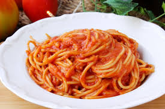

Los espaguetis son el plato de pasta seca por excelencia. Elaborados en su forma tradicional con sémola de trigo
duro y venerados en Italia, donde se consumen 28 kilos por persona y año, son una fuente inagotable de recetas en
los fogones de la cocina internacional. Su traducción al español, aunque el término ya está integrado en el
diccionario de la Real Academia Española de la Lengua (RAE), sería ‘hilitos’. Un diminutivo de la palabra
‘spagho’ (cordón).

Ingredientes
2 Cucharadas grandes Mantequilla
2 Unidades Ajo Majados
1/2 Taza Cebolla Blanca Picadita
1 Envase Leche Evaporada Carnation® UHT 135 ml
1 bolsa Caldo en Polvo Gallinita con Tomate MAGGI®
1/2 Libra Espagueti hervida según las instrucciones del empaque y con sal
1/4 Taza Queso Parmesano Rallado
Pasos
En la mantequilla saltea por tres minutos el ajo y la cebolla. Añade el Caldo en Polvo Gallinita con
Tomate MAGGI® y la Leche Evaporada CARNATION®.
Añade la pasta, mezcla con el queso, retira del fuego y sirve.